Automatic Differentiation (AD) is an important algorithm for calculating the derivatives of arbitrary functions that can be expressed by a computer program. One of my favorite CS papers is "Automatic differentiation in machine learning: a survey" by Baydin, Perlmutter, Radul and Siskind (ADIMLAS from here on). While this post attempts to be useful on its own, it serves best as a followup to the ADIMLAS paper - so I strongly encourage you to read that first.
The main idea of AD is to treat a computation as a nested sequence of function compositions, and then calculate the derivative of the outputs w.r.t. the inputs using repeated applications of the chain rule. There are two methods of AD:
- Forward mode: where derivatives are computed starting at the inputs
- Reverse mode: where derivatives are computed starting at the outputs
Reverse mode AD is a generalization of the backpropagation technique used in training neural networks. While backpropagation starts from a single scalar output, reverse mode AD works for any number of function outputs. In this post I'm going to be describing how reverse mode AD works in detail.
While reading the ADIMLAS paper is strongly recommended but not required, there is one mandatory pre-requisite for this post: a good understanding of the chain rule of calculus, including its multivariate formulation. Please read my earlier post on the subject first if you're not familiar with it.
Linear chain graphs
Let's start with a simple example where the computation is a linear chain of primitive operations: the Sigmoid function.
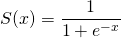This is a basic Python implementation:
def sigmoid(x):
return 1 / (1 + math.exp(-x))
To apply the chain rule, we'll break down the calculation of to a sequence of function compositions, as follows:
Take a moment to convince yourself that is equivalent to the composition .
The same decomposition of sigmoid into primitives in Python would look as follows:
def sigmoid(x):
f = -x
g = math.exp(f)
w = 1 + g
v = 1 / w
return v
Yet another representation is this computational graph:
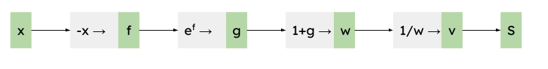Each box (graph node) represents a primitive operation, and the name assigned to it (the green rectangle on the right of each box). An arrows (graph edge) represent the flow of values between operations.
Our goal is to find the derivative of S w.r.t. x at some point  ,
denoted as . The process starts by running the computational
graph forward with our value of . As an example, we'll use
:
,
denoted as . The process starts by running the computational
graph forward with our value of . As an example, we'll use
:
Since all the functions in this graph have a single input and a single output, it's sufficient to use the single-variable formulation of the chain rule.
To avoid confusion, let's switch notation so we can explicitly see which
derivatives are involved. For  and as before, we can
write the derivatives like this:
and as before, we can
write the derivatives like this:
Each of these is a function we can evaluate at some point; for example, we
denote the evaluation of at as .
So we can rewrite the chain rule like this:
Reverse mode AD means applying the chain rule to our computation graph, starting with the last operation and ending at the first. Remember that our final goal is to calculate:
Where S is a composition of multiple functions. The first composition we unravel is the last node in the graph, where v is calculated from w. This is the chain rule for it:
The formula for S is , so its derivative is 1. The formula for v is , so its derivative is . Substituting the value of w computed in the forward pass, we get:
Continuing backwards from v to w:
We've already calculated in the previous step. Since , we know that , so:
Continuing similarly down the chain, until we get to the input x:
We're done; the value of the derivative of the sigmoid function at is 0.24; this can be easily verified with a calculator using the analytical derivative of this function.
As you can see, this procedure is rather mechanical and it's not surprising that it can be automated. Before we get to automation, however, let's review the more common scenario where the computational graph is a DAG rather than a linear chain.
General DAGs
The sigmoid sample we worked though above has a very simple, linear computational graph. Each node has a single predecessor and a single successor; moreover, the function itself has a single input and single output. Therefore, the single-variable chain rule is sufficient here.
In the more general case, we'll encounter functions that have multiple inputs, may also have multiple outputs [1], and the internal nodes are connected in non-linear patterns. To compute their derivatives, we have to use the multivariate chain rule.
As a reminder, in the most general case we're dealing with a function that has n inputs, denoted , and m outputs, denoted . In other words, the function is mapping 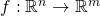.
The partial derivative of output i w.r.t. input j at some point a is:
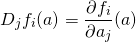Assuming f is differentiable at a, then the complete derivative of f w.r.t. its inputs can be represented by the Jacobian matrix:
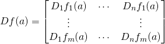The multivariate chain rule then states that if we compose (and assuming all the dimensions are correct), the derivative is:
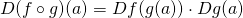This is the matrix multiplication of 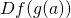 and  .
.
Linear nodes
As a warmup, let's start with a linear node that has a single input and a single output:
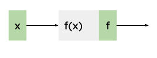In all these examples, we assume the full graph output is S, and its derivative by the node's outputs is . We're then interested in finding . Since since , the Jacobian is just a scalar:
And the chain rule is:
No surprises so far - this is just the single variable chain rule!
Fan-in
Let's move on to the next scenario, where f has two inputs:
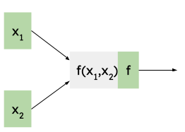Once again, we already have the derivative available, and we're interested in finding the derivative of S w.r.t. the inputs.
In this case, , so the Jacobian is a 1x2 matrix:
And the chain rule here means multiplying a 1x1 matrix by a 1x2 matrix:
Therefore, we see that the output derivative propagates to each input separately:
Fan-out
In the most general case, f may have multiple inputs but its output may also be used by more than one other node. As a concrete example, here's a node with three inputs and an output that's used in two places:
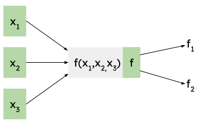While we denote each output edge from f with a different name, f has a single output! This point is a bit subtle and important to dwell on: yes, f has a single output, so in the forward calculation both and will have the same value. However, we have to treat them differently for the derivative calculation, because it's very possible that and are different!
In other words, we're reusing the machinery of multi-output functions here. If f had multiple outputs (e.g. a vector function), everything would work exactly the same.
In this case, since we treat f as , its Jacobian is a 2x3 matrix:
The Jacobian is a 1x2 matrix:
Applying the chain rule:
Therefore, we have:
The key point here - which we haven't encountered before - is that the derivatives through f add up for each of its outputs (or for each copy of its output). Qualitatively, it means that the sensitivity of f's input to the output is the sum of its sensitivities across each output separately. This makes logical sense, and mathematically it's just the consequence of the dot product inherent in matrix multiplication.
Now that we understand how reverse mode AD works for the more general case of DAG nodes, let's work through a complete example.
General DAGs - full example
Consider this function (a sample used in the ADIMLAS paper):
It has two inputs and a single output; once we decompose it to primitive operations, we can represent it with the following computational graph [2]:
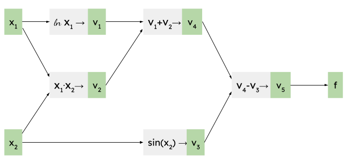As before, we begin by running the computation forward for the values of at which we're interested to find the derivative. Let's take and :
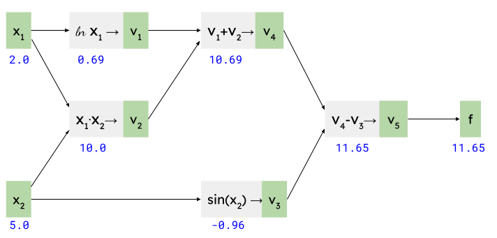Recall that our goal is to calculate and . Initially we know that [3].
Starting with the node, let's use the fan-in formulas developed earlier:
Next, let's tackle . It also has a fan-in configuration, so we'll use similar formulas, plugging in the value of we've just calculated:
On to . It's a simple linear node, so:
Note the (1) superscript though! Since is a fan-out node, it will have more than one contribution to its derivative; we've just computed the one from . Next, let's compute the one from . That's another fan-in node:
We've calculated the other contribution to the derivative, and the first out of two contributions for the derivative. Next, let's handle :
Finally, we're ready to add up the derivative contributions for the input arguments. is a "fan-out" node, with two outputs. Recall from the section above that we just sum their contributions:
And:
And we're done! Once again, it's easy to verify - using a calculator and the analytical derivatives of - that these are the right derivatives at the given points.
Backpropagation in ML, reverse mode AD and VJPs
A quick note on reverse mode AD vs forward mode (please read the ADIMLAS paper for much more details):
Reverse mode AD is the approach commonly used for machine learning and neural networks, because these tend to have a scalar loss (or error) output that we want to minimize. In reverse mode, we have to run AD once per output, while in forward mode we'd have to run it once per input. Therefore, when the input size is much larger than the output size (as is the case in NNs), reverse mode is preferable.
There's another advantage, and it relates to the term vector-jacobian product (VJP) that you will definitely run into once you start digging deeper in this domain.
The VJP is basically a fancy way of saying "using the chain rule in reverse mode AD". Recall that in the most general case, the multivariate chain rule is:
However, in the case of reverse mode AD, we typically have a single output from the full graph, so is a row vector. The chain rule then means multiplying this row vector by a matrix representing the node's jacobian. This is the vector-jacobian product, and its output is another row vector. Scroll back to the Fan-out sample to see an example of this.
This may not seem very profound so far, but it carries an important meaning in terms of computational efficiency. For each node in the graph, we don't have to store its complete jacobian; all we need is a function that takes a row vector and produces the VJP. This is important because jacobians can be very large and very sparse [4]. In practice, this means that when AD libraries define the derivative of a computation node, they don't ask you to register a complete jacobian for each operation, but rather a VJP.
This also provides an additional way to think about the relative efficiency of reverse mode AD for ML applications; since a graph typically has many inputs (all the weights), and a single output (scalar loss), accumulating from the end going backwards means the intermediate products are VJPs that are row vectors; accumulating from the front would mean multiplying full jacobians together, and the intermediate results would be matrices [5].
A simple Python implementation of reverse mode AD
Enough equations, let's see some code! The whole point of AD is that it's automatic, meaning that it's simple to implement in a program. What follows is the simplest implementation I could think of; it requires one to build expressions out of a special type, which can then calculate gradients automatically.
Let's start with some usage samples; here's the Sigmoid calculation presented earlier:
xx = Var(0.5)
sigmoid = 1 / (1 + exp(-xx))
print(f"xx = {xx.v:.2}, sigmoid = {sigmoid.v:.2}")
sigmoid.grad(1.0)
print(f"dsigmoid/dxx = {xx.gv:.2}")
We begin by building the Sigmoid expression using Var values (more on this later). We can then run the grad method on a Var, with an output gradient of 1.0 and see that the gradient for xx is 0.24, as calculated before.
Here's the expression we used for the DAG section:
x1 = Var(2.0)
x2 = Var(5.0)
f = log(x1) + x1 * x2 - sin(x2)
print(f"x1 = {x1.v:.2}, x2 = {x2.v:.2}, f = {f.v:.2}")
f.grad(1.0)
print(f"df/dx1 = {x1.gv:.2}, df/dx2 = {x2.gv:.2}")
Once again, we build up the expression, then call grad on the final value. It will populate the gv attributes of input Vars with the derivatives calculated w.r.t. these inputs.
Let's see how Var works. The high-level overview is:
- A Var represents a node in the computational graph we've been discussing in this post.
- Using operator overloading and custom math functions (like the exp, sin and log seen in the samples above), when an expression is constructed out of Var values, we also build the computational graph in the background. Each Var has links to its predecessors in the graph (the other Vars that feed into it).
- When the grad method is called, it runs reverse mode AD through the computational graph, using the chain rule.
Here's the Var class:
class Var:
def __init__(self, v):
self.v = v
self.predecessors = []
self.gv = 0.0
v is the value (forward calculation) of this Var. predecessors is the list of predecessors, each of this type:
@dataclass
class Predecessor:
multiplier: float
var: "Var"
Consider the v5 node in DAG sample, for example. It represents the calculation v4-v3. The Var representing v5 will have a list of two predecessors, one for v4 and one for v3. Each of these will have a "multiplier" associated with it:
- For v3, Predecessor.var points to the Var representing v3 and Predecessor.multiplier is -1, since this is the derivative of v5 w.r.t. v3
- Similarly, for v4, Predecessor.var points to the Var representing v4 and Predecessor.multiplier is 1.
Let's see some overloaded operators of Var [6]:
def __add__(self, other):
other = ensure_var(other)
out = Var(self.v + other.v)
out.predecessors.append(Predecessor(1.0, self))
out.predecessors.append(Predecessor(1.0, other))
return out
# ...
def __mul__(self, other):
other = ensure_var(other)
out = Var(self.v * other.v)
out.predecessors.append(Predecessor(other.v, self))
out.predecessors.append(Predecessor(self.v, other))
return out
And some of the custom math functions:
def log(x):
"""log(x) - natural logarithm of x"""
x = ensure_var(x)
out = Var(math.log(x.v))
out.predecessors.append(Predecessor(1.0 / x.v, x))
return out
def sin(x):
"""sin(x)"""
x = ensure_var(x)
out = Var(math.sin(x.v))
out.predecessors.append(Predecessor(math.cos(x.v), x))
return out
Note how the multipliers for each node are exactly the derivatives of its output w.r.t. corresponding input. Notice also that in some cases we use the forward calculated value of a Var's inputs to calculate this derivative (e.g. in the case of sin(x), the derivative is cos(x), so we need the actual value of x).
Finally, this is the grad method:
def grad(self, gv):
self.gv += gv
for p in self.predecessors:
p.var.grad(p.multiplier * gv)
Some notes about this method:
- It has to be invoked on a Var node that represents the entire computation.
- Since this function walks the graph backwards (from the outputs to the inputs), this is the direction our graph edges are pointing (we keep track of the predecessors of each node, not the successors).
- Since we typically want the derivative of some output "loss" w.r.t. each Var, the computation will usually start with grad(1.0), because the output of the entire computation is the loss.
- For each node, grad adds the incoming gradient to its own, and propagates the incoming gradient to each of its predecessors, using the relevant multiplier.
- The addition self.gv += gv is key to managing nodes with fan-out. Recall our discussion from the DAG section - according to the multivariate chain rule, fan-out nodes' derivatives add up for each of their outputs.
- This implementation of grad is very simplistic and inefficient because it will process the same Var multiple times in complex graphs. A more efficient implementation would sort the graph topologically first and then would only have to visit each Var once.
- Since the gradient of each Var adds up, one shouldn't be reusing Vars between different computations. Once grad was run, the Var should not be used for other grad calculations.
The full code for this sample is available here.
Conclusion
The goal of this post is to serve as a supplement for the ADIMLAS paper; once again, if the topic of AD is interesting to you, I strongly encourage you to read the paper! I hope this post added something on top - please let me know if you have any questions.
Industrial strength implementations of AD, like autograd and JAX, have much better ergonomics and performance than the toy implementation shown above. That said, the underlying principles are similar - reverse mode AD on computational graphs. To explore how such a system works, see my radgrad project.
| [1] | In this post we're only looking at single-output graphs, however, since these are typically sufficient in machine learning (the output is some scalar "loss" or "error" that we're trying to minimize). That said, for functions with multiple outputs the process is very similar - we just have to run the reverse mode AD process for each output variable separately. |
| [2] | Note that the notation here is a bit different from the one used for the sigmoid function. This notation is adopted from the ADIMLAS paper, which uses for all temporary values within the graph. I'm keeping the notations different to emphasize they have absolutely no bearing on the math and the AD algorithm. They're just a naming convention. |
| [3] | For consistency, I'll be using the partial derivative notation throughout this example, even for nodes that have a single input and output. |
| [4] | For an example of gigantic, sparse jacobians see my older post on backpropagation through a fully connected layer. |
| [5] | There are a lot of additional nuances here to explain; I strongly recommend this excellent lecture by Matthew Johnson (of JAX and autograd fame) for a deeper overview. |
| [6] | These use the utility function ensure_var; all it does is wrap the its argument in a Var if it's not already a Var. This is needed to wrap constants in the expression, to ensure that the computational graph includes everything. |